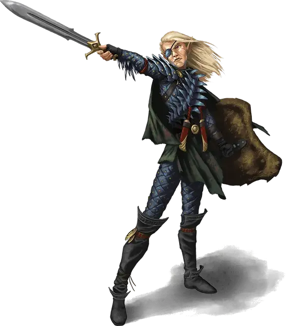

Дралморрер Серорожденный
Dralmorrer Borngray
Средний Гуманоид (Высший эльф), нейтрально-злой, именной НИП

Класс Доспеха 16 (проклёпанный кожаный доспех, щит)
Хиты 52 (7к10 + 14)
Скорость 30 футов
| мод | спас | ||
|---|---|---|---|
| СИЛ | 18 | +4 | +6 |
| ЛОВ | 14 | +2 | +2 |
| ТЕЛ | 14 | +2 | +4 |
| мод | спас | ||
|---|---|---|---|
| ИНТ | 16 | +3 | +3 |
| МДР | 10 | +0 | +0 |
| ХАР | 8 | −1 | −1 |
Навыки Восприятие +2, Магия +5, Обман +1, Проницательность +2, Религия +5
Чувства тёмное зрение 60 футов, пассивное Восприятие 12
Языки Общий, Гоблинский, Драконий, Сильван, Эльфийский, Язык Жаболюдов
Опасность 3 (700 опыта)
Бонус мастерства +2
Особенности
Наследие фей. Дралморрер совершает с преимуществом спасброски против очарования, и его невозможно магически усыпить.
Использование заклинаний. Дралморрер является заклинателем 7-го уровня. Его базовой характеристикой является Интеллект (Сл спасброска от заклинаний 13, +5 к попаданию атаками заклинаниями). У Дралморрера заготовлены следующие заклинания волшебника:
• Заговоры (по желанию): огненный снаряд [fire bolt], фокусы [prestidigitation], электрошок [shocking grasp]
• 1 уровень (4 ячейки): скороход [longstrider], волшебная стрела [magic missile], щит [shield], волна грома [thunderwave]
• 2 уровень (3 ячейки): магическое оружие [magic weapon], туманный шаг [misty step]
Боевая магия. Когда Дралморрер использует действие чтобы сотворить заговор, он также может бонусным действием совершить одну атаку оружием.
Связь с оружием. Если длинный меч Дралморрера находится на том же плане, что и его хозяин, Дралморрер бонусным действием может телепортировать свой меч к себе в руку.
Действия
Мультиатака. Дралморрер совершает две атаки либо своим длинным мечом, либо кинжалом.
Длинный меч. Рукопашная атака оружием: +6 к попаданию, досягаемость 5 футов, одна цель. Попадание: 8 (1к8+4) рубящего урона.
Кинжал. Рукопашная или Дальнобойная атака оружием: +6 к попаданию, досягаемость 5 футов или дистанция 20 / 60 футов, одна цель. Попадание: 6 (1к4+4) колющего урона.